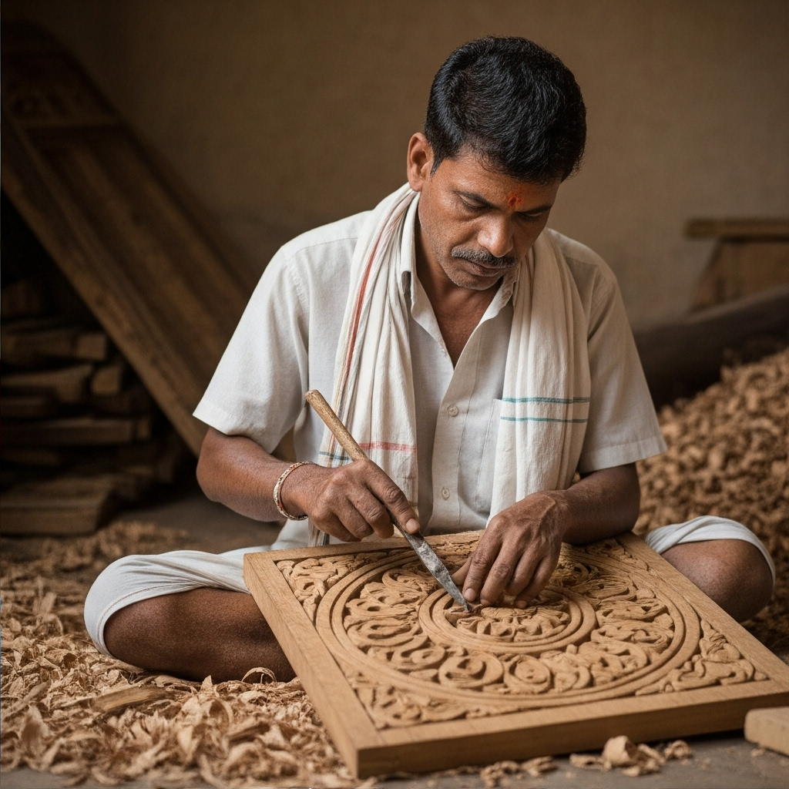
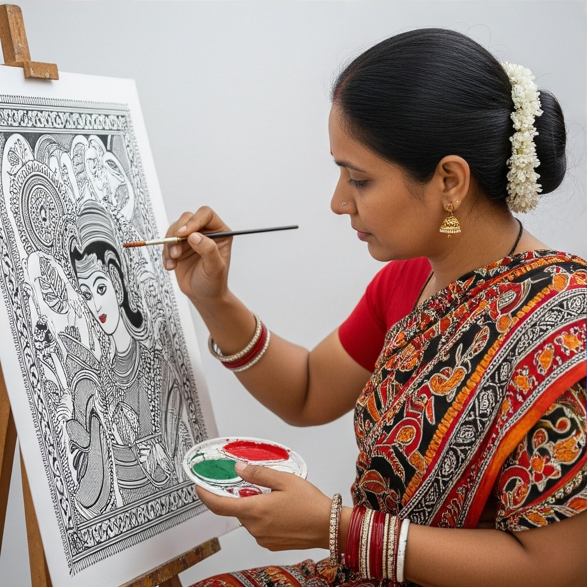
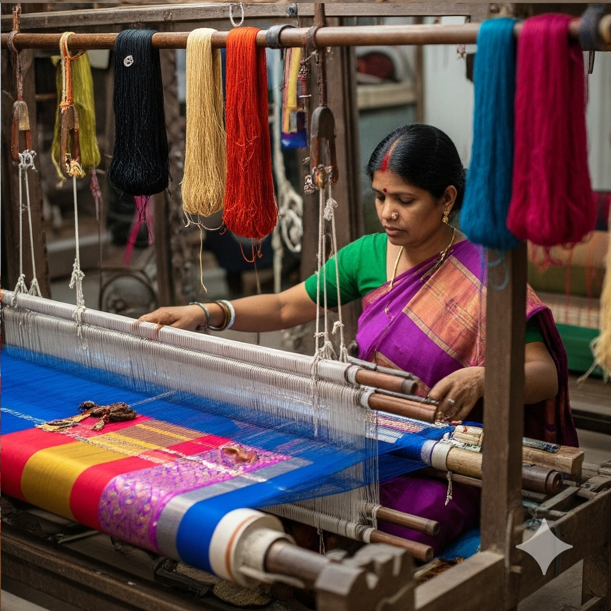

Rajasthan
The Legacy of Blue Pottery in Jaipur
Originating from Turko-Persian traditions, Jaipur's Blue Pottery has evolved over centuries into a celebrated art form. This section delves into how this craft has been passed down through generations.
Read the Full StoryMeet the Artisans

Ramesh Kumar
Wood Carver, Uttar Pradesh
"The wood tells me what it wants to become. I just listen with my hands."
View Profile

Sita Devi
Madhubani Painter, Bihar
"Every line I draw is a prayer, a story from my ancestors for the future."
View Profile

Lakshmi Bai
Kanjeevaram Weaver, Tamil Nadu
"We weave threads of silk and gold, but also the dreams of our daughters."
View Profile